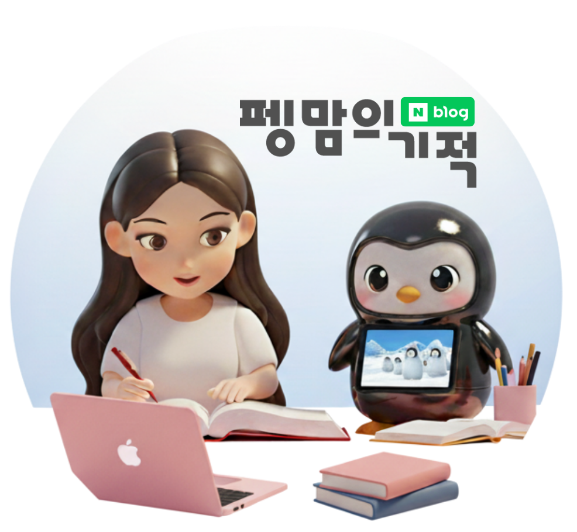
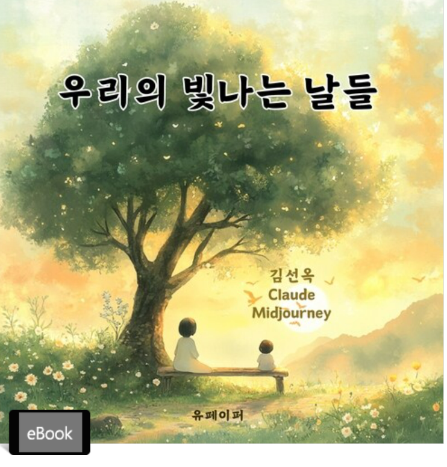
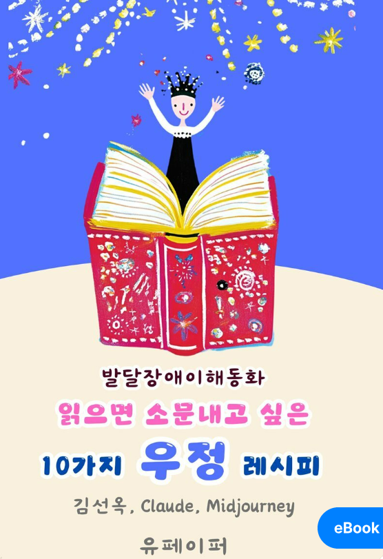
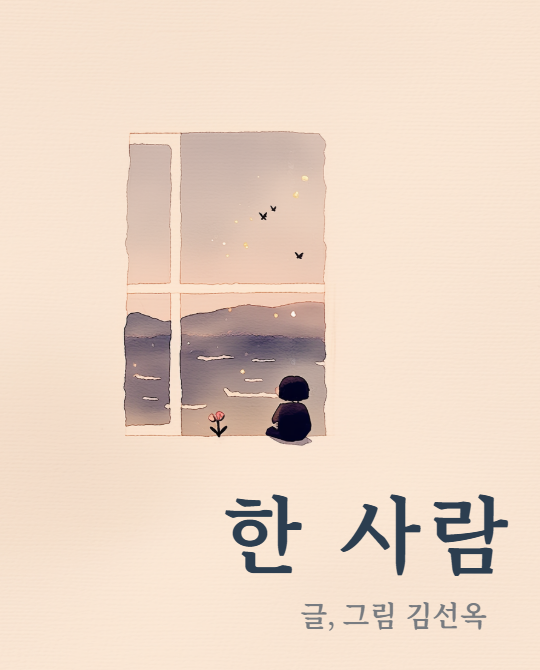
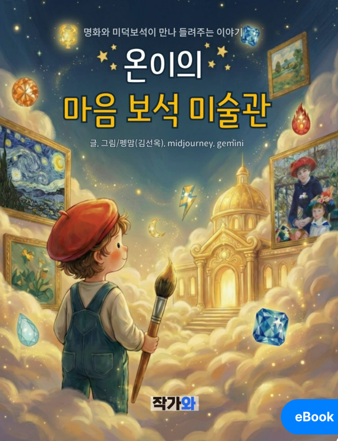
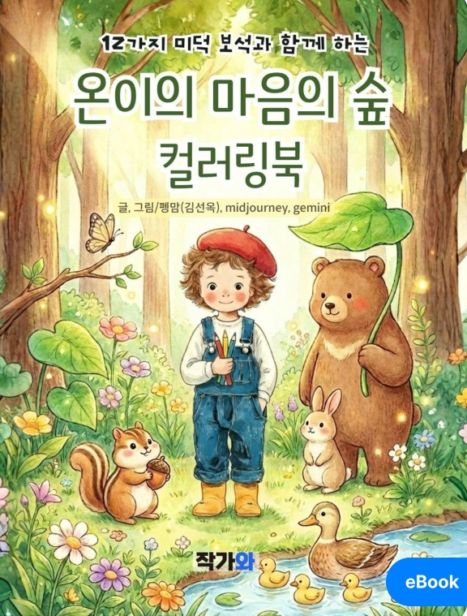
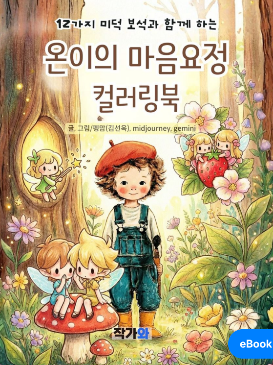

안녕하세요! 유아교육 현장에서 AI와 에듀테크를 실천하는 펭맘입니다 🐧✨
충남교육청 홍성교육지원청 소속 공립유치원 교사로서 유아교육·특수교육·AI 미래교육을 연결하고 있습니다.
교사가 쉽게 실천할 수 있고, 아이들의 배움을 더욱 풍성하게 만드는 현장 중심의 AI 활용 방법을 연구하고 나눕니다.
현장에서 시작해 함께 성장하는 교육
유치원 교실에서 실제로 필요한 수업자료와 업무 도구를 AI, Google Workspace, Canva, 바이브코딩으로 직접 만들고 적용합니다.
기술을 소개하는 데 그치지 않고, 교사가 자신의 상황에 맞게 활용하고 다시 나눌 수 있도록 돕는 쉽고 실용적인 미래교육을 지향합니다.
📌 지금, 이런 활동을 하고 있습니다
교육 현장과 연구, 교사 커뮤니티에서 이어가고 있는 실천입니다.
충남교육청 홍성교육지원청 공립유치원 교사
유아의 놀이와 배움을 중심으로 교육과정을 운영하며, AI와 에듀테크를 교실과 교사업무에 실제로 적용하고 있습니다.
AI미래교육연구회 연구회원(AI이미지영상분과)
AI 이미지와 영상 기술을 교육 콘텐츠와 수업자료에 활용하는 방법을 연구하고 나눕니다.
충남교육청 정보분야 현장지원단(2026)
학교 현장의 디지털·정보 분야 활용과 지원을 위한 현장 중심 활동에 참여합니다.
ai파티쉐꿈공방 크리에이터
AI를 활용해 교육 콘텐츠와 창작물을 기획하고 제작합니다.
행복교실 16기
행복한 교실과 교사의 성장을 위한 배움과 실천을 이어 갑니다.
네이버블로거 ‘펭맘의 기적’
유아교육, 특수교육, AI 활용 교육과 교사로서의 경험을 기록하고 다른 교사 및 학부모와 나눕니다.
📚 이야기와 그림으로 전하는 교육
AI 이미지와 이야기 창작을 활용하여 장애인식개선과 미덕교육의 메시지를 담은 동화와 컬러링북을 제작했습니다.
주제 1. 장애인식개선 동화
서로 다른 모습과 특성을 이해하고, 함께 살아가는 우정과 포용의 가치를 전하는 이야기입니다.

우리의 빛나는 날들
읽으면 소문내고 싶은 10가지 우정 레시피
한 사람주제 2. 미덕교육 동화 및 컬러링북
아이들이 자신의 마음과 다양한 미덕을 이야기와 미술활동으로 탐색할 수 있도록 만든 교육 콘텐츠입니다.

온이의 마음보석 미술관
온이의 마음의 숲 컬러링북
온이의 마음 요정 컬러링북🌟 펭맘을 만드는 네 가지 연결
현장, 연구, 창작, 나눔이 이루는 조화로운 가치입니다.
1. 현장
공립유치원 교사로서 실제 교실에서 출발합니다.
2. 연구
AI 미래교육과 유아특수교육을 배우고 연구합니다.
3. 창작
AI 이미지·영상, 동화, 활동자료와 웹사이트를 직접 만듭니다.
4. 나눔
강의, 블로그, 연구회 활동을 통해 경험과 자료를 나눕니다.
🌱 펭맘 선생님의 걸어온 길
유아교육 현장, 유아특수교육 연구, 자폐아동 부모로서의 경험, 그리고 AI 미래교육 실천을 연결하며 걸어온 기록입니다.
공립유치원 교사이자 AI·유아특수교육 실천가
유아교육 현장에서 아이들과 만나며, Google Workspace·Canva·생성형 AI·바이브코딩을 수업과 교사 업무에 실제로 적용하고 있습니다.
유아특수교육전공 석사 졸업
AI 미래교육과 유아특수교육을 연결하는 강의 활동 확장
통합교육과 장애영유아 가족 지원을 주제로 강의 시작
유아교육 현장과 유아특수교육 연구를 함께 이어 가는 교사
특수교육대학원 유아특수교육 전공을 통해 장애영유아와 가족 지원, 통합교육, 부모상담에 관한 전문성을 쌓았습니다.
교사이자 자폐아동 부모로서 함께 배우는 교육
교실에서의 경험과 가정에서의 경험을 연결하여, 교사와 부모 어느 한쪽의 관점에 치우치지 않는 현실적인 교육과 지원 방법을 고민합니다.
AI를 어렵지 않게, 교실에서 바로 쓰이도록
생성형 AI, Google Workspace, Canva, 바이브코딩을 활용해 교사가 직접 수업자료와 업무 자동화 도구, 필요한 웹사이트를 만들 수 있도록 연구하고 나눕니다.
🎓 대표 강의 및 연수 분야
유치원과 특수교육 현장에서 바로 활용할 수 있는 AI·Google Workspace·Canva·바이브코딩 실습형 연수를 진행합니다.
교사를 위한 생성형 AI 활용
ChatGPT, Gemini, Claude 등 생성형 AI를 교사의 수업과 업무에 실제로 적용하는 방법을 함께 실습합니다.
- 수업 아이디어와 활동자료 기획
- 안내문·상담 문안·기록 작성
- 이미지·음악·영상 콘텐츠 제작
- 교사에게 맞는 AI 도구 선택과 활용
Google Workspace 업무 자동화
Sheets, Forms, Docs, Slides, Calendar를 연동하여 반복되는 유치원 업무를 쉽고 효율적으로 개선합니다.
- 설문지 응답과 신청자료 자동 정리
- 상담·출결·돌봄 관련 자료 관리
- 문서와 슬라이드 자동 생성
- 캘린더를 활용한 일정과 업무 관리
교사를 위한 바이브코딩
Gemini와 Antigravity 등을 활용하여 코드를 직접 작성하지 않고도 필요한 웹사이트와 업무 도구를 제작합니다.
- 교육자료 모음 홈페이지
- 결석·신청·상담 지원 웹앱
- 체크리스트와 기록 관리 도구
- 교실 상황에 맞춘 맞춤형 앱 제작
Canva 교육 콘텐츠 제작
Canva를 활용하여 수업자료부터 강의자료, 카드뉴스와 안내문까지 보기 좋고 수정하기 쉬운 교육 콘텐츠를 제작합니다.
- 활동지와 작은책
- 발표자료와 연수자료
- 가정통신문과 카드뉴스
- 영상·썸네일·교실 환경자료
유아교육 × AI 에듀테크
AI를 아이들에게 가르치는 기술이 아니라, 놀이와 표현을 넓히는 교사의 도구로 활용합니다.
- AI 동화·그림·음악·영상 프로젝트
- 놀이 중심 수업자료 제작
- 유아 발달에 맞는 디지털 리터러시
- 교사의 교육적 판단을 중심으로 한 AI 활용
유아특수교육과 포용적 교육
유아의 의사소통과 참여, 개별화를 지원하는 시각자료와 교육 콘텐츠를 함께 설계합니다.
- 그림카드·선택판·시각적 일정
- 유아의 흥미와 수준을 반영한 자료
- 상담과 가정연계 자료
- AI를 활용한 특수교육 교사 업무 지원
💌 강의 및 협업 문의
유치원·특수교육·교사 AI 활용 연수, 콘텐츠 제작 및 교육 프로젝트 협업을 기다립니다.
💻 선생님을 위한 바이브코딩 학습 포털
말과 글로 만드는 나만의 미래 교육 앱, 기초부터 실전까지 함께 배우고 활용합니다.
처음부터 차근차근, 바이브코딩 학습 로드맵
용어를 무조건 암기하기보다 하나의 웹앱이 만들어지는 흐름 속에서 개념을 이해합니다.
바이브코딩이란?
자연어로 필요한 기능과 화면을 설명하고 AI와 대화하며 결과물을 만들고 수정하는 새로운 소프트웨어 개발 방식입니다.
화면을 만드는 기본 재료
HTML, CSS, .gs 파일, JavaScript 등 웹의 기초 재료를 이해합니다.
- HTML: 화면의 내용과 구조 (건물의 뼈대와 벽)
- CSS: 색상, 크기, 배치 등 표현 (건물의 인테리어와 디자인)
- .gs 파일: Google Apps Script에서 데이터 처리 기능 담당 (건물의 전기/수도 설비)
- JavaScript: 버튼 클릭과 인터랙션 동작 (건물의 엘리베이터와 자동문)
화면 앞과 뒤 이해하기
사용자가 눈으로 보는 영역(프론트엔드)과 화면 뒤에서 데이터를 저장하고 처리하는 영역(백엔드/서버)의 관계를 파악합니다.
버튼, 입력창, 유아 화면
구글 시트, AI 답변, 데이터 저장
서로 다른 서비스 연결하기
API와 MCP 등 서로 다른 프로그램 간 정보를 주고받는 통로를 이해합니다.
- API: 식당에서 메뉴판을 보고 주문을 전달하듯, 지정된 규칙으로 데이터를 받아오는 창구
- MCP: AI가 필요에 따라 내 컴퓨터의 파일 읽기, 검색, 실행 등 연장을 직접 골라 쓰는 만능 도구함
- 인증/권한: 신분증 확인(인증) 후 허용된 서랍장만 열도록 규제하는 안전장치
Google Workspace와 연결하기
Google Apps Script, Sheets, Forms, Docs, Drive, Calendar를 연동하여 설문 응답 정리, 안내문 작성, 일정 관리 등의 반복 업무를 줄이는 자동화를 구현합니다.
좋은 화면과 좋은 경험 만들기
눈으로 보기에 예쁜 화면(UI)과 선생님·유아가 실제로 사용할 때 느끼는 편안함과 효율성(UX), 반응형 및 접근성 설계를 학습합니다.
실제 제작 흐름 익히기
아이디어 → 사용자 정하기 → 문제 정의 → 기능 목록 → 화면 구성 → AI에게 요청 → 결과 확인 → 오류 수정 → 사용자 테스트 → 배포 → 유지관리
초보 교사를 위한 바이브코딩 용어사전
궁금한 용어를 검색하거나 카테고리별로 찾아보세요. 카드를 클릭하면 쉬운 설명과 실제 예시가 펼쳐집니다.
아이디어가 실제 웹앱이 되기까지 (8단계)
선생님의 아이디어를 차근차근 완성해 나가는 표준 제작 8단계 가이드입니다.
해결하고 싶은 문제 찾기
교실이나 업무에서 매번 번거롭거나 반복되던 일 1가지를 명확히 포착합니다.
실제 사용할 사람 정하기
유아(만3/4/5세), 교사, 학부모 등 주요 사용자의 특징과 발달 수준을 정합니다.
꼭 필요한 기능만 정리하기
첫 시도에서는 핵심 기능 1~2개만 먼저 뽑아 우선순위를 정합니다.
종이에 화면 그려보기
스케치북에 네모 상자를 그리고 상단에는 제목, 중앙에는 기능, 하단에는 버튼 위치를 배치해 봅니다.
AI에게 첫 번째 제작 요청하기
구체적인 역할, 목적, 화면 구조, 사용 도구를 명시하여 AI에게 초안을 요청합니다.
직접 눌러 보고 오류 찾기
브라우저에서 직접 눌러보며 안 움직이는 버튼이나 어색한 부분을 확인합니다.
수정 요청을 작게 나누어 반복하기
한 번에 하나씩 요구사항을 수정하거나 추가하며 단계를 밟아 완성도를 높입니다.
배포하고 실제 사용자 의견 받기
GitHub Pages 등으로 웹 주소를 만들고 교실이나 동료 교사에게 사용 후기를 받습니다.
❌ 좋지 않은 요청
“예쁜 수업 앱 만들어 줘.”
대상, 목적, 구체적인 기능이 없어 AI가 추측해서 만드므로 기대와 전혀 다른 결과물이 나올 가능성이 높습니다.
⭕ 개선된 요청
“만 5세 유아가 교실 태블릿에서 사용할 동물 이름 맞히기 퀴즈 웹앱을 만들어 주세요. 한 화면에 문제 하나를 보여 주고, 정답을 선택하면 즉시 칭찬 메시지가 나오게 해 주세요.”
사용자(만 5세), 용도(교실 태블릿), 주제(동물 퀴즈), 화면 방식이 명확하여 완벽한 초안이 생성됩니다.
보고, 눌러 보고, 바로 활용하는 UI·UX 실전 도감
이름만 외우는 UI·UX가 아니라 실제 화면을 눌러 보고, 언제 사용하면 좋은지 확인하며, AI 제작 요청문까지 복사할 수 있는 실전 자료실입니다.
💡 교사를 위한 UI·UX 기본 원칙 12가지
가장 중요한 기능이나 제목을 가장 크고 눈에 띄게 배치합니다.
버튼의 색상과 모양, 폰트 스타일을 전체 화면에서 통일합니다.
버튼을 누르면 소리, 색상 변경, 소리와 함께 눌렸음을 알립니다.
중요한 삭제나 제출 전 한 번 더 묻는 확인창을 제공합니다.
전문적인 개발 용어 대신 유아와 교사가 아는 명확한 어휘를 씁니다.
교실 멀리서나 스마트보드에서도 잘 보이도록 폰트 크기를 확보합니다.
배경과 글자 색상의 명도 대비를 뚜렷하게 하여 가독성을 높입니다.
태블릿 터치 시 손가락이 빗나가지 않도록 버튼 크기를 큼직하게 만듭니다.
목표 기능까지 가기 위해 클릭하는 횟수를 최소화합니다.
스마트폰이나 세로형 태블릿에서도 화면이 깨지지 않게 반응형으로 설계합니다.
음성 읽기(TTS), 명확한 대비, 자막 등 다각적 감각을 지원합니다.
동료 교사나 아이들에게 쓰게 해보고 관찰하여 계속 개선합니다.
📌 바이브코딩 강의 이력
🎓 진행 가능한 바이브코딩 강의 주제
유치원과 학교 현장에서 바로 적용할 수 있는 실습형 연수 주제입니다.
💡 펭맘의 바이브코딩 강의 특장점
- 1. 개념 설명보다 직접 만드는 실습 중심: 복잡한 문법 전달을 지양하고 첫 시간부터 결과물을 만들어 냅니다.
- 2. 코딩 경험이 없는 교사도 참여 가능: 자연어(말과 글)로 AI에게 요청하는 노하우를 배우므로 누구나 쉽게 따라옵니다.
- 3. 유치원과 학교 현장의 실제 사례 활용: 교실에서 진짜 필요한 룰렛, 출석판, 퀴즈, 서류 자동화 예시로 학습합니다.
- 4. 참가자의 업무와 수업에 맞춘 결과물 제작: 연수가 끝날 때 선생님 각자 가져갈 나만의 완성작을 만듭니다.
- 5. 완성 후 스스로 수정할 수 있는 방법 안내: 돌아가서도 AI와 대화하며 계속 고치고 발전시킬 수 있습니다.
💌 우리 기관과 교실에 필요한 바이브코딩 강의를 함께 설계합니다
유치원·학교·교육청 교원 연수 및 워크숍 출강 문의를 환영합니다.
🎨 교사의 상상을 수업자료로 바꾸는 Canva
수업자료부터 학부모 안내, 강의 콘텐츠와 영상까지 쉽고 빠르게 완성하는 현장 중심 교육 디자인
수업자료·활동지
한글, 수학, 미술, 프로젝트 활동지와 작은책, 유아의 발달 수준을 고려한 기록 자료 제작
교실 환경·라벨
환경구성 자료, 이름표, 칭찬판, 메달, 행사 라벨과 계절별 교실 자료 제작
학부모 소통자료
가정통신문, 카드뉴스, 체크리스트, 행사와 방학 안내 이미지를 읽기 쉽게 디자인
강의·연수 콘텐츠
교사 연수용 프레젠테이션, 실습자료, 워크북과 강의 홍보용 썸네일 제작
영상·숏폼 제작
수업 활동 영상, 학급 안내 영상, 교육 콘텐츠와 짧은 홍보 영상 제작
AI 디자인 활용
AI를 활용한 이미지 제작, 배경 정리, 문서 초안과 다양한 디자인 시안 생성
편집 가능한 템플릿
다른 교사도 문구와 사진을 쉽게 바꾸어 자신의 학급에서 재사용할 수 있는 자료 제작
AI와 Canva 연결
ChatGPT와 Canva를 연결하여 슬라이드와 디자인 결과물을 빠르게 제작하고 수정하는 작업 흐름
💡 현장 교사이기에 다르게 만듭니다
- 1. 실제 교실에서 바로 사용할 수 있는 자료: 이론 중심이 아닌 교실 적용성을 최우선으로 제작합니다.
- 2. 유아가 읽고 이해하기 쉬운 시각 구성: 직관적인 아이콘과 레이아웃으로 전달력을 높입니다.
- 3. 교사가 기록하고 수정하기 편한 디자인: 번거로운 편집 없이 수정이 쉬운 구조를 만듭니다.
- 4. 특수교육대상 유아의 접근성을 고려한 자료: 다양한 발달 특성에 맞춘 시각적 지원을 반영합니다.
- 5. 다른 교사가 다시 편집하여 활용할 수 있는 템플릿: 수정을 거쳐 각 교실 맞춤형으로 변형 가능합니다.
📚 Canva 교육 및 실습 주제
교원 연수 및 워크숍에서 진행하는 대표 Canva 교육 커리큘럼입니다.
☁️ 구글 워크스페이스 & AI 자동화
반복 업무는 줄이고, 수업 준비와 기록은 더 쉽고 똑똑하게
1. 구글 앱 연동 업무 자동화
Google Sheets, Forms, Docs, Slides를 서로 연결하여
반복되는 유치원 업무를 간편하게 자동화합니다.
- 설문지 응답을 시트에 자동 정리
- 출결·돌봄·상담·신청 자료 관리
- 가정통신문·보고서·회의록 작성
- 수집된 자료를 문서와 슬라이드로 재구성
2. AI 수업자료 제작
Gemini와 NotebookLM을 활용하여
교사의 아이디어를 실제 수업자료로 빠르게 발전시킵니다.
- 놀이와 활동 아이디어 구성
- 활동지·안내문·수업자료 초안 제작
- 참고자료 요약과 핵심 내용 정리
- 연령과 발달 수준에 맞는 질문 생성
- Docs·Slides와 연계한 자료 제작
3. 교사를 위한 바이브코딩
Gemini와 Antigravity를 활용하여 코드를 직접 작성하지 않고도
필요한 교육용 웹사이트와 업무 도구를 제작합니다.
- 결석·지각 신청 웹페이지
- 수업자료 모음 홈페이지
- 상담 기록 및 문안 생성 도구
- 체크리스트·대시보드·업무 지원 앱
- 유치원 상황에 맞춘 맞춤형 사이트 제작
4. 영상과 일정·소통 관리
Google의 영상·일정·설문 도구를 활용하여
교육 콘텐츠 제작과 소통 업무를 효율적으로 관리합니다.
- Google Flow를 활용한 교육 영상 제작
- 동화·수업 도입·활동 안내 영상 구성
- Google Calendar로 행사와 연수 일정 관리
- Google Forms로 학부모 신청과 의견 수집
- Drive를 활용한 자료 공유와 협업
🎈 유아교육 × AI 에듀테크
AI를 가르치는 것이 아니라, 아이들의 놀이와 표현을 넓혀 주는 도구로 활용합니다.
유아의 발달 수준과 흥미를 고려하여 교사가 직접 설계한 안전하고 따뜻한 디지털 경험을 만듭니다.
1. AI 동화·그림·음악 놀이
아이들의 생각과 그림을 AI 동화, 노래, 이미지, 영상으로 확장하여 창의적인 이야기 놀이를 지원합니다.
- 아이의 그림으로 움직이는 이야기 만들기
- AI 동요와 정리송 제작
- 동화 장면과 등장인물 만들기
- 아이디어를 영상과 음악으로 표현하기
2. 놀이 중심 수업자료 제작
교사의 교육 의도와 유아의 흥미를 바탕으로 활동지, 작은책, 게임, 그림 자료를 직접 제작합니다.
- 프로젝트 활동지와 작은책
- 언어·수·미술 놀이 자료
- 계절·생활주제 맞춤 콘텐츠
- 교실 환경 구성과 가정연계 자료
3. 발달에 맞는 디지털 리터러시
기기를 잘 다루는 것보다 미디어를 안전하고 올바르게 경험하는 태도를 중요하게 생각합니다.
- 사진·영상·소리의 의미 탐색
- 사실과 상상을 구분하는 놀이
- 개인정보와 초상권 이해
- 함께 보고 이야기하는 미디어 활동
4. 포용적 유아·특수교육 지원
다양한 의사소통 방식과 발달 특성을 고려하여 모든 아이가 참여할 수 있는 자료를 만듭니다.
- 그림카드와 시각적 일정
- 단계별 활동 안내
- 개별 흥미를 반영한 맞춤 자료
- 의사소통과 감정 표현 지원 콘텐츠
🏫 교실에서 만나는 AI 에듀테크
실제 현장에서 아이들과 함께 호흡하며 진행한 4가지 핵심 프로젝트 사례입니다.
AI 음악 프로젝트
정리송, 미덕송, 졸업송 등을 만들어 교실 생활에 활용
AI 동화·영상 프로젝트
유아의 그림과 아이디어를 동화와 영상으로 발전
맞춤형 놀이자료
유아의 관심과 발달 수준에 맞춘 활동지와 작은책 제작
포용적 교육자료
말로 표현하기 어려운 유아를 위한 그림·사진·선택형 자료 제작
🤝 특수교육 × 포용적 에듀테크
AI와 디지털 도구를 활용해 유아의 의사소통과 자기표현, 일상 참여를 돕습니다.
기술보다 아이의 강점과 흥미를 먼저 살피고, 교사의 관찰과 관계를 중심으로 맞춤형 지원을 설계합니다.
1. 의사소통과 자기표현 지원
말뿐 아니라 그림, 사진, 몸짓, 선택판, AAC 등 다양한 방식으로 유아가 자신의 생각과 요구를 표현할 수 있도록 돕습니다.
- 그림카드와 선택판 제작
- 감정과 요구 표현 자료
- AAC 활용을 위한 시각자료
- 말로 표현하기 어려운 유아의 참여 지원
2. 시각적 구조화와 일과 지원
하루의 흐름과 활동 순서를 눈으로 이해할 수 있도록 정보를 단순하고 분명하게 구조화합니다.
- 시각적 하루 일정
- ‘먼저–그다음’ 카드
- 활동 단계별 안내
- 기다리기·전환·마무리 지원 자료
3. 흥미와 발달 수준을 반영한 개별화
같은 활동에서도 유아마다 다른 참여 방법과 표현 방식을 선택할 수 있도록 자료와 환경을 조정합니다.
- 선호 주제를 활용한 맞춤 자료
- 난이도와 정보량 단계 조절
- 보기·듣기·만지기 등 다양한 접근 방식
- 글쓰기 대신 고르기·붙이기·가리키기 제공
4. 관찰·기록·가정과의 협력
교사의 관찰을 체계적으로 기록하고, 보호자와 유아의 변화와 지원 방법을 구체적으로 공유합니다.
- 놀이·행동·의사소통 관찰 기록
- 상담 내용과 지원 전략 정리
- IEP·IFSP 관련 자료 작성 보조
- 가정과 학교의 일관된 지원 방법 공유
🏫 교실에서 이렇게 활용합니다
유아특수교육 현장에서 아이의 참여와 성장을 도운 실제 사례입니다.
시각적 일정과 선택판
일과와 선택지를 눈으로 확인하며 유아가 예측하고 스스로 선택하도록 지원
사회적 이야기
낯선 상황이나 어려운 행동을 사진과 짧은 문장으로 미리 이해하도록 지원
맞춤형 활동자료
유아의 관심 대상과 현재 수행 수준을 반영해 참여 가능한 활동으로 조정
상담·기록 지원 도구
관찰 내용을 정리하고 보호자와 공유할 문장을 구체적이고 따뜻하게 작성